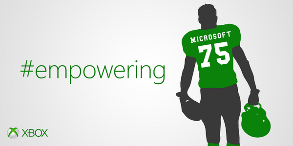

The 3 endpoints as medium for gaming
Like with linkedin Microsoft care about empowering the community of gamers


In my last article, I applauded the job done by Microsoft into the gaming industry because of the opportunity it provided to the industry to expand by shipping an ever-improved operating system named Windows which is still a door for games studios and game developers to build and publish amazing game experience that we players could enjoy.
Preparing the extension of this article about valuing business using user attention models made me go through acquisitions of games studios and I sampled as first steps the past acquisition of Zynga this mobile game studio what gave me a bit insights about the value of player’s attention. For complexifying this valuation model I revisited the past acquisitions of Microsoft in the gaming industry and was aware of the willingness of Microsoft to acquire Roblox, a startup I knew early. Microsoft acquired many startups involved in gaming technology because what I think is that Microsoft is not interested only in operating a well-designed console and an operating system that players could use to have fun by playing games but they are really seeking to build, nurture and empower a community of gaming made of great game developers and gamers like you and making others be interested in games that can be a medium for learning not only playing.
Today, I had the opportunity to talk with one of the folks at Microsoft who with a team of 27 engineers like him are doing important works that matter for this commitment of Microsoft around gaming to happen for the benefit of the whole globe. trying years to launch creative tech-enabled ideas with failure taught me what matters for people when it is about tech and games and provided me this the skill of coming up with creative ideas and testing them faster. It happens that there are also people like these 28 engineers at Microsoft that were doing like me with success. I mean coming up with tech-enabled ideas, test prototyping them fastly and launching them if they pass the tests.
Embedding yourself in such kind of team could help you learn more and succeed or at least and quite frankly this is what I am thinking about and willing because I won’t that my ideas to simply stay cheap words that may stand years online before someone discover them and execute them. In such a situation sharing, building, and learning with a team may make a lot of sense to you in any case it does for me.
Games seem to be this only creative artifact that benefits from three or more endpoints as Medium of Consumption (PC, Console, and Mobile) then there is any reason for the size of the audience of gamers and game industry actors to grow with other more amazingly creative and educative gameplay experiences and platforms. This is all I was willing to do in my entrepreneurial journey among other fintech objectives and I think that it helps me gather a lot of skills and working ideas on top of these I gathered working into the banking industry which is a financially speed-constrained environment.
What I am regretting is to have spent a lot of time before writing about that for sharing with you and I hope I will be continuing to write and share and I am also highly willing to build with people into a Team like this Microsoft team. I hope you too will.
PS: this version of windows below is newer than the one on the cover image